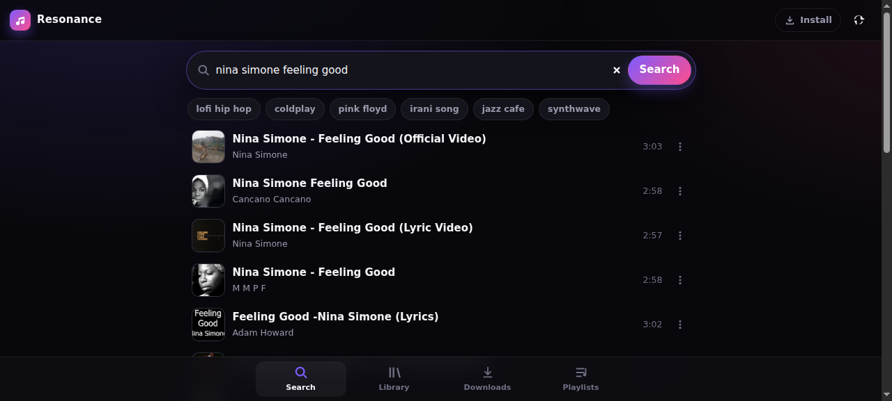
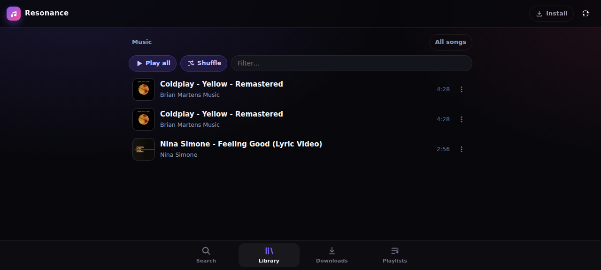
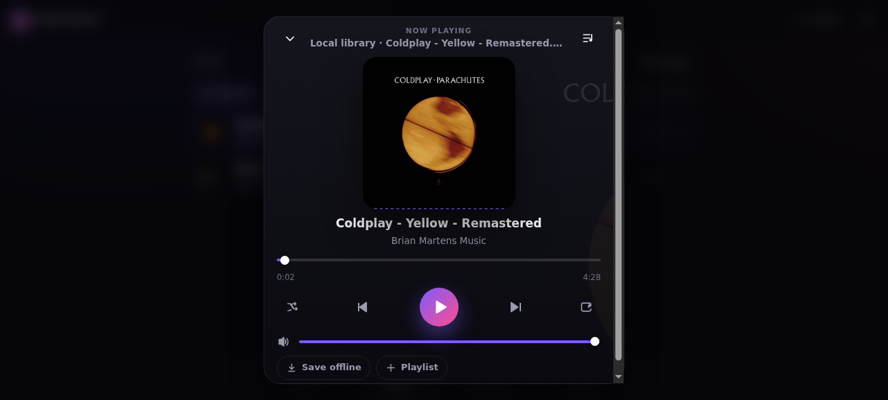

Search → download → play
Tap a YouTube result: it downloads with yt-dlp, shows honest progress (percent, speed, ETA, “converting audio”), gets its tags and cover art, and starts playing when it lands.
v3.0.0 — a library per person, sharing, and chunked playback
Search YouTube, download with yt-dlp and keep a properly tagged library — then listen from a browser, an iPhone or an Android phone. Everyone gets their own shelf, and you can send songs to each other.
Unsigned IPA (you sideload it) · debug-signed APK · no cloud, no accounts, no subscription.
Queue, shuffle, repeat, keyboard shortcuts, live spectrum visualiser, Media Session controls — and it installs like an app.



One small Express server does the work, and three clients speak the same JSON API.
Tap a YouTube result: it downloads with yt-dlp, shows honest progress (percent, speed, ETA, “converting audio”), gets its tags and cover art, and starts playing when it lands.
ID3v2 and M4A tags read into a browsable library: folders, a recursive “all songs” view, filter, durations, embedded cover art with an ffmpeg fallback.
Pick a name once per device and the server answers with that person’s folder only. The library you already have stays the server owner’s, untouched.
Send a track to one person or to everyone. It stays in your library; they can play it in place or copy it into theirs.
Tracks are split into ~4-second chunks (HLS) so playback begins after the first one, with the whole-file Range stream kept as an automatic fallback.
An installable PWA, a native SwiftUI iOS app and a native Kotlin/Compose Android app — same API, same library, same queue behaviour.
Real background audio: AVAudioSession plus remote commands on iOS, a MediaSessionService on Android — lock screen, headset buttons and car controls included.
Save a track to the device and it plays with no server in reach — as a real file on iOS and Android, through Cache Storage in the browser (that part needs HTTPS).
Play-next, add-to-queue, shuffle and repeat (off / all / one), seeking, keyboard shortcuts, playlists — and a live spectrum visualiser in the web app.
YouTube audio can’t be streamed straight from a browser or a phone, and yt-dlp can’t run on iOS — so the server does the heavy lifting and every client stays thin.
Search, the download queue, ID3/M4A tagging, cover extraction, per-person libraries, sharing, Range streaming and chunked segmentation.
Downloads the audio, embeds metadata and artwork, probes durations, and cuts tracks into chunks on demand.
Everything lives in a folder you own: back it up, copy it, or drop new music in over SMB — it shows up in the apps.
Waiting for a whole file to transfer before the first note is a waste. The server hands the player a short playlist and cuts the track into ~4-second pieces as it goes.
GET /api/playlist.m3u8 answers immediately — and starts ffmpeg segmenting the file in the background while it does.
The player fetches /api/chunk?key=…&name=seg00001.ts as it goes, so it can start after a single chunk.
Chunks are keyed by path + size + mtime and pruned automatically, so the second play of that song is instant.
No ffmpeg on the server? /api/health says so, and every client quietly falls back to the normal Range stream — slower to start, identical to listen to.
A name is not a password: it decides which library the server answers with. Nobody has to see anybody else’s music.
The files already in your music folder belong to the server owner (DEFAULT_USER), so an install that already works keeps working — no migration, no moving files around.
Anyone who picks a name gets their own folder under users/<name>. Nothing is shared by accident, and downloads land in the requester’s folder.
Drop files into shared/ and every name can browse and play them — read-only through the apps, so nobody deletes anyone else’s music.
From any track’s menu, in any client, pick a person — or “Everyone” on the server. Add a note if you like; they see it next to the song.
The recipient streams the song straight from your library, with permissions checked on every request — someone who wasn’t part of the share gets a 403.
“Save to my library” copies the file into their folder, renaming instead of clobbering anything that already has that name.
Usernames are not authentication. This is a home/LAN server: put it behind a VPN or an authenticating reverse proxy before exposing it to the internet.
Start the server, point the app at it, type the name you want to listen as. That’s the whole setup.
Open the server address in the browser and use “Add to Home Screen”: full screen, an offline app shell, and Media Session controls on the lock screen.
Download the unsigned IPA and sideload it with AltStore, Sideloadly or TrollStore — they re-sign it for your device.
Download the APK and install it — allow installs from unknown sources when the system asks.
Requirements: Node 20 or newer, plus yt-dlp and ffmpeg/ffprobe on your PATH.
git clone https://github.com/rnetis/resonance
cd resonance
npm install
PORT=3130 node server.jsThe server prints every address it can be reached on, e.g. http://192.168.1.20:3130 — that is what you type into the apps.
npm test
# 29 tests: library, Range streaming,
# covers, jobs, users, sharing, chunksNo accounts, no external services: the suite builds a throwaway library with ffmpeg and starts the real server.
Everything the three clients do goes through these routes. Identity travels as X-Resonance-User on API calls, and as ?user= on media URLs (players don’t send headers).
| Route | What it does |
|---|---|
| GET /api/search?q= | YouTube results for a query |
| POST /api/download | Queue a yt-dlp download into your library |
| GET /api/jobs | Your download queue with live progress |
| GET /api/tracks | Your library (or scope=shared) with tags |
| GET /api/stream | Audio, with HTTP Range support |
| GET /api/playlist.m3u8 | Chunked (HLS) playlist for instant starts |
| GET /api/chunk | One MPEG-TS chunk of a chunked stream |
| GET /api/cover | Embedded cover art (ffmpeg fallback) |
| GET /api/duration | ffprobe duration, cached |
| GET /api/users | Everyone on the server, with track counts |
| POST /api/users | Create a name (and its library) |
| GET /api/shares | Shared with me / I shared |
| POST /api/share | Send a track to a person, or to everyone |
| POST /api/shares/:id/import | Copy a shared track into your library |
| DELETE /api/track | Remove a file from your library |
| GET /api/health | Tooling, users, chunked-streaming status |
Not a public service. There are no accounts or passwords — keep it on your LAN, behind a VPN, or behind an authenticating proxy.
Not a YouTube client. YouTube audio can’t be streamed directly; the server downloads it first. Respect the terms of the services you use.
Not store-signed. The IPA is unsigned and the APK is debug-signed; both are meant for sideloading, not for the App Store or Play Store.
No magic discovery. iOS won’t find the server by itself — you type the address the server prints on startup.
Only to search and download. Playing your library works on the local network, and tracks you saved to a device play with no server at all.
Yes. Each name gets its own library, downloads are queued per person, and the shared area is browsable by everyone.
In one folder on your own machine (MUSIC_DIR, by default ~/music). Nothing is uploaded anywhere; the only outside traffic is the YouTube search and the downloads you ask for.
That share shows up as “file is gone” and can’t be played — but a copy somebody already imported stays in their library.
For installing to the home screen and offline caching, yes — service workers require a secure context. Searching and streaming work over plain HTTP on your LAN.
Please do. The API is small and plain JSON (table above), and all three shipped clients are just consumers of it.
Per-person libraries, sharing between people, chunked playback with a Range fallback, and the native Android app — alongside the SwiftUI iOS app and the PWA.